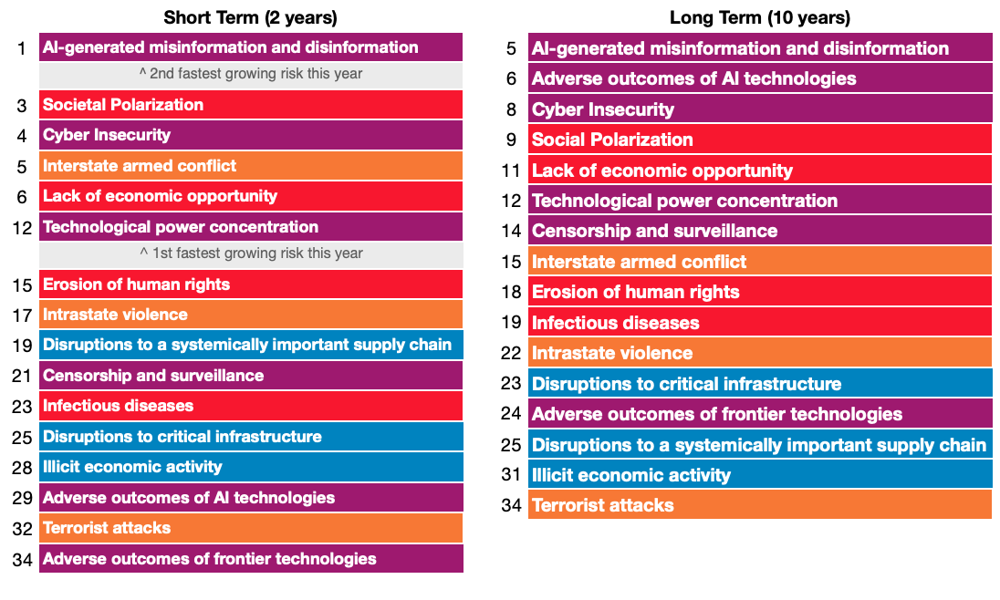
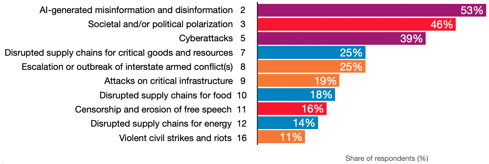

https://www3.weforum.org/docs/WEF_The_Global_Risks_Report_2024.pdf
"Please estimate the likely impact (severity) of the following risks over a 2-year and 10-year period."
"Please select up to five risks that you believe are most likely to present a material crisis on a global scale in 2024.”

“The Global Risks Report, developed in collaboration with Marsh McLennan and Zurich Insurance Group, explores some of the most severe risks we may face over the next decade, against a backdrop of rapid technological change, economic uncertainty, a warming planet and conflict.”
“The Global Risks Perception Survey (GRPS) is the World Economic Forum's source of original risks data, harnessing the expertise of the Forum's extensive network of academic, business, government, civil society and thought leaders.”
Data from 1,490 GRPS respondents.
Of the 34 global risks included in the survey, our proposal has a direct positive impact on 6 (17.6%), and therefore an indirect positive impact on 10, for a total of 16 (47%):
Of the 20 global risks believed most likely to present a material crisis on a global scale, our proposal has a direct positive impact on 2 (10%), and therefore an indirect positive impact on 8, for a total of 10 (50%):
By publicizing our intent and ability to protect our customers from, and therefore reduce the risk of 47% of the global risks likely to have the most severe impact over the next 2- and 10-year periods, we can use the influence and reach of the World Economic Forum as a funnel for sales, investments, and partnerships.